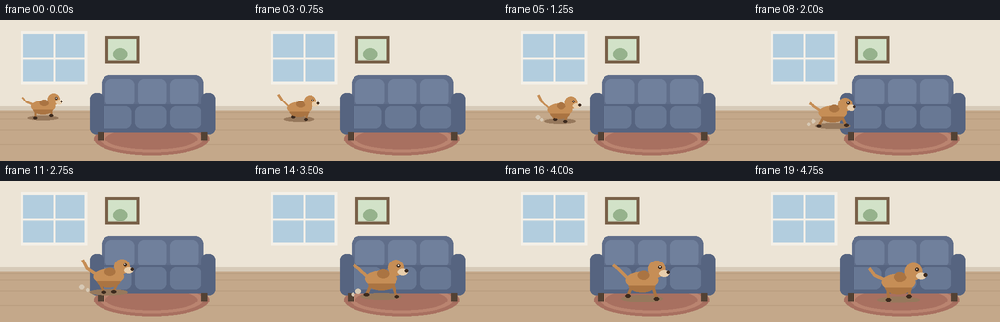
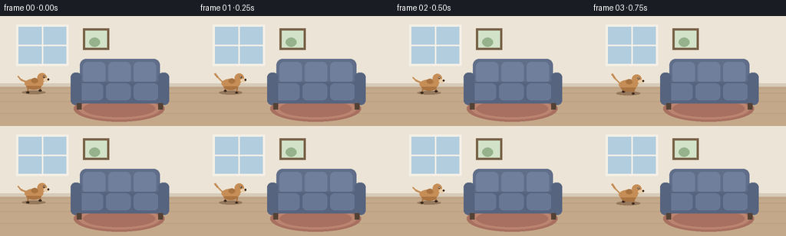

CODING AGENTS AS PIXEL WORLD MODELS
traex/Seed-2.1-Pro-0915 · dynamic_spatial_relationship_0001
点击播放 · 原生 RGB 像素
逐轮保存的候选
回放视频、检查图与代码变化。
每份候选均可单独播放。实际图片检查记录在下方工具轨迹中。
候选 01播放与检查图
点击播放 · 原生 RGB 像素


展开代码变化
--- 上一保存版本
+++ 本次保存版本
@@ -0,0 +1,197 @@
+"""Text-to-video: a dog runs from the left of a sofa to the front of it.
+
+Renders 20 RGB frames at 256x144 with pure PIL drawing (2x supersampled).
+"""
+import json
+import math
+from pathlib import Path
+
+import numpy as np
+from PIL import Image, ImageDraw
+
+import artifact_io
+
+CASE_DIR = Path(__file__).parent
+SS = 2 # supersampling factor
+
+
+def lerp(a, b, t):
+ return a + (b - a) * t
+
+
+def ease_in_out(t):
+ return 0.5 - 0.5 * math.cos(math.pi * t)
+
+
+def draw_room(draw, W, H):
+ # Wall and floor
+ floor_y = 92 * SS
+ draw.rectangle([0, 0, W, floor_y], fill=(236, 228, 214))
+ draw.rectangle([0, floor_y, W, H], fill=(196, 168, 138))
+
+ # Floorboard lines
+ for i in range(1, 6):
+ y = floor_y + i * i * 2.2 * SS
+ draw.line([(0, y), (W, y)], fill=(186, 158, 128), width=SS)
+
+ # Baseboard
+ draw.rectangle([0, floor_y - 4 * SS, W, floor_y], fill=(214, 202, 184))
+
+ # Window on the back wall
+ wx0, wy0, wx1, wy1 = (24 * SS, 14 * SS, 86 * SS, 62 * SS)
+ draw.rectangle([wx0 - 3 * SS, wy0 - 3 * SS, wx1 + 3 * SS, wy1 + 3 * SS],
+ fill=(244, 240, 232))
+ draw.rectangle([wx0, wy0, wx1, wy1], fill=(178, 205, 222))
+ draw.line([((wx0 + wx1) // 2, wy0), ((wx0 + wx1) // 2, wy1)],
+ fill=(244, 240, 232), width=2 * SS)
+ draw.line([(wx0, (wy0 + wy1) // 2), (wx1, (wy0 + wy1) // 2)],
+ fill=(244, 240, 232), width=2 * SS)
+
+ # Picture frame
+ px0, py0, px1, py1 = (108 * SS, 16 * SS, 142 * SS, 44 * SS)
+ draw.rectangle([px0, py0, px1, py1], fill=(120, 96, 72))
+ draw.rectangle([px0 + 3 * SS, py0 + 3 * SS, px1 - 3 * SS, py1 - 3 * SS],
+ fill=(210, 226, 200))
+ draw.ellipse([px0 + 8 * SS, py0 + 12 * SS, px1 - 12 * SS, py1 - 4 * SS],
+ fill=(150, 178, 140))
+
+ # Rug in front of the sofa
+ draw.ellipse([96 * SS, 104 * SS, 214 * SS, 138 * SS], fill=(168, 112, 96))
+ draw.ellipse([102 * SS, 107 * SS, 208 * SS, 135 * SS], fill=(186, 132, 112))
+ draw.ellipse([108 * SS, 110 * SS, 202 * SS, 132 * SS], fill=(168, 112, 96))
+
+
+def draw_sofa(draw):
+ # Backrest
+ draw.rounded_rectangle([104 * SS, 56 * SS, 208 * SS, 92 * SS],
+ radius=8 * SS, fill=(96, 110, 138))
+ # Cushions on the back
+ for x0 in (108, 141, 174):
+ draw.rounded_rectangle([x0 * SS, 60 * SS, (x0 + 29) * SS, 88 * SS],
+ radius=6 * SS, fill=(112, 128, 156))
+ # Seat base
+ draw.rounded_rectangle([98 * SS, 86 * SS, 214 * SS, 114 * SS],
+ radius=8 * SS, fill=(86, 100, 128))
+ # Seat cushions
+ for x0 in (102, 138, 174):
+ draw.rounded_rectangle([x0 * SS, 88 * SS, (x0 + 32) * SS, 110 * SS],
+ radius=6 * SS, fill=(104, 120, 148))
+ # Arms
+ draw.rounded_rectangle([92 * SS, 74 * SS, 106 * SS, 116 * SS],
+ radius=6 * SS, fill=(86, 100, 128))
+ draw.rounded_rectangle([206 * SS, 74 * SS, 220 * SS, 116 * SS],
+ radius=6 * SS, fill=(86, 100, 128))
+ # Legs
+ for lx in (100, 206):
+ draw.rectangle([lx * SS, 114 * SS, (lx + 6) * SS, 122 * SS],
+ fill=(84, 66, 52))
+
+
+def draw_dog(draw, cx, gy, scale, phase, run_t):
+ """Draw a side-view dog facing right. (cx, gy): center-x / ground-y."""
+ k = scale * SS
+ u = lambda v: v * k # local unit -> pixels
+
+ body_fur = (198, 142, 86)
+ fur_dark = (170, 116, 66)
+ muzzle = (232, 206, 172)
+ dark = (60, 42, 30)
+
+ bob = math.sin(phase * 2) * 1.4 * k
+ bx0 = cx * SS - u(15)
+ by0 = gy * SS - u(15) + bob - u(7.5)
+ bx1 = cx * SS + u(15)
+ by1 = gy * SS - u(15) + bob + u(7.5)
+
+ # Ground shadow
+ draw.ellipse([cx * SS - u(19), gy * SS - u(3),
+ cx * SS + u(19), gy * SS + u(3)],
+ fill=(150, 120, 92))
+
+ # Legs: two pairs swinging out of phase
+ for side, lx in ((-1, -10), (1, 10)):
+ sw = math.sin(phase) * side
+ lift = max(0.0, -math.cos(phase + (math.pi if side > 0 else 0)))
+ ax = cx * SS + u(lx)
+ ay = by1 - u(2)
+ footx = ax + u(sw * 5)
+ footy = gy * SS - lift * u(3)
+ draw.line([(ax, ay), (footx, footy)], fill=fur_dark,
+ width=max(2, int(round(u(2.6)))))
+ draw.ellipse([footx - u(2.2), footy - u(1.4),
+ footx + u(2.6), footy + u(1.6)], fill=dark)
+
+ # Tail (wagging), attached at the rear (left side)
+ tx = bx0 + u(2)
+ ty = (by0 + by1) / 2 - u(2)
+ wag = math.sin(phase + 0.6)
+ tmx, tmy = tx - u(8), ty - u(6) + math.cos(phase) * u(2)
+ tex, tey = tx - u(13), ty - u(12) + wag * u(4)
+ draw.line([(tx, ty), (tmx, tmy), (tex, tey)], fill=body_fur,
+ width=max(2, int(round(u(3)))), joint="curve")
+
+ # Body
+ draw.ellipse([bx0, by0, bx1, by1], fill=body_fur)
+ draw.chord([bx0 + u(3), by0 + u(6), bx1 - u(3), by1 + u(3)],
+ 0, 180, fill=fur_dark)
+ draw.ellipse([cx * SS - u(4), by0 - u(1), cx * SS + u(7), by0 + u(7)],
+ fill=fur_dark)
+
+ # Head at the front (right)
+ hr = u(7.5)
+ hcx = bx1 - u(3) + hr * 0.2
+ hcy = by0 - u(2) + math.sin(phase * 2 + 0.4) * u(0.8)
+ # Floppy ear flaps while running
+ ear_swing = math.sin(phase * 2 + 1.2) * u(1.6)
+ draw.polygon([(hcx - u(3), hcy - hr + u(1)),
+ (hcx - u(8), hcy + u(2) + ear_swing),
+ (hcx - u(1), hcy + u(3))], fill=fur_dark)
+ draw.ellipse([hcx - hr, hcy - hr, hcx + hr, hcy + hr], fill=body_fur)
+ # Muzzle, nose, eye
+ mx0 = hcx + hr * 0.3
+ my0 = hcy + u(1)
+ draw.ellipse([mx0, my0, mx0 + u(9), my0 + u(6)], fill=muzzle)
+ draw.ellipse([mx0 + u(6.5), my0 + u(0.5),
+ mx0 + u(9.5), my0 + u(3.5)], fill=dark)
+ draw.ellipse([hcx + u(1.5), hcy - u(3), hcx + u(4.5), hcy], fill=dark)
+ draw.ellipse([hcx + u(2.4), hcy - u(2.4),
+ hcx + u(3.4), hcy - u(1.4)], fill=(245, 245, 245))
+
+ # Dust puffs while moving
+ if 0.15 < run_t < 0.9:
+ for i in range(2):
+ a = phase + i * math.pi
+ px = bx0 - u(6) - (math.sin(a) * 0.5 + 0.5) * u(6)
+ py = gy * SS - u(2) - i * u(3)
+ r = u(1.6 + 0.8 * i)
+ draw.ellipse([px - r, py - r, px + r, py + r], fill=(214, 200, 180))
+
+
+def render_frame(index, n):
+ W, H = 256 * SS, 144 * SS
+ img = Image.new("RGB", (W, H))
+ draw = ImageDraw.Draw(img)
+ draw_room(draw, W, H)
+ draw_sofa(draw)
+
+ t = ease_in_out(index / (n - 1))
+ # Left of the sofa -> in front of it (closer to camera: lower, larger)
+ cx = lerp(44, 152, t)
+ gy = lerp(100, 121, t)
+ scale = lerp(0.8, 1.15, t)
+ phase = index * 1.05 * math.pi
+ draw_dog(draw, cx, gy, scale, phase, t)
+
+ return np.asarray(img.resize((256, 144), Image.Resampling.LANCZOS))
+
+
+def main():
+ spec = json.loads((CASE_DIR / "task_spec.json").read_text())
+ n = spec["frames"]
+ frames = np.stack([render_frame(i, n) for i in range(n)]).astype(np.uint8)
+ artifact_io.save(frames, CASE_DIR)
+ print(f"Saved {n} frames {frames.shape[1:3]} to {CASE_DIR}")
+
+
+if __name__ == "__main__":
+ main()
可观测工具轨迹
实际执行的命令与返回图片。
命令 1exit 0
/bin/bash -lc 'cat prompt.txt GENERATION_RULES.md task_spec.json'
命令 2exit 0
/bin/bash -lc 'ls -la; find . -name "artifact_io*" 2>/dev/null; python3 -c "import artifact_io" 2>&1 | head -2'
命令 3exit 0
/bin/bash -lc 'cat artifact_io.py'
命令 4exit 0
/bin/bash -lc 'cd . && python3 generate.py && ls -la pixels.npz frames | head -30'
命令 5exit 1
/bin/bash -lc "cd . && python3 - <<'EOF'
import numpy as np
from PIL import Image
frames = np.stack([np.asarray(Image.open(f\"frames/{i:02d}.png\")) for i in range(20)])
print(\"shape\", frames.shape, \"dtype\", frames.dtype)
print(\"per-frame mean range:\", frames.mean(axis=(1,2,3)).min().round(1), frames.mean(axis=(1,2,3)).max().round(1))
print(\"unique colors first/last:\", len(np.unique(frames[0].reshape(-1,3), axis=0)), len(np.unique(frames[-1].reshape(-1,3), axis=0)))
# dog fur color approx (198,142,86): locate its centroid per frame
fur = np.all(np.abs(frames.astype(int) - [198,142,86]).sum(-1) < 40, axis=-1)
for i in [0,4,9,14,19]:
ys, xs = np.where(fur[i])
print(f\"frame {i:02d}: fur pixels={len(xs):4d} centroid=({xs.mean():5.1f},{ys.mean():5.1f}) x-range=({xs.min()},{xs.max()})\")
# sofa front base region x 100..210, y 95..115: dog-colored overlap at start vs end
region_fur = fur[:, 95:115, 100:210]
print(\"fur pixels in sofa-front region, frame 0 vs 19:\", region_fur[0].sum(), region_fur[19].sum())
# temporal change
diffs = np.abs(frames[1:].astype(int) - frames[:-1].astype(int)).sum(-1)
print(\"mean per-frame changed pixels (>30):\", (diffs > 30).sum(axis=(1,2)).mean().round(0))
EOF"保存候选 1 份；完成命令 5 次；可验证图片返回 0 张。原始 API 响应与完整日志保留在本地。